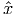

- Show that the optimal value of this problem is unbounded.
- Given a feasible point and feasible direction d≠0, let ϕ,d(α) = f( + αd). For any feasible and d, show that ϕ,d(α) has a finite minimal value over {α ≥ 0}.
Solution:
- Taking the feasible points x1 = -t, x2 = t2 and t → ∞ drives the objective function value to -∞.
- Let d = (d1,d2). We break into cases depending on the sign of d1.
- If d1 > 0 then ϕ,d(α) is minimized by α = 0 with value 1.
- If d1 = 0 then one minimizer of ϕ,d(α) is α = 0 with value 1.
- If d1 < 0 then + αd is infeasible for sufficiently large α. The largest possible value
for α is the larger root of the quadratic equation
giving the optimal value of ϕ,d(α) = 1 + d1.
|
| (1) |
we have b ∈ ℝm and A ∈ ℝm×n. Let e denote the vector of ones. The problem can be expressed equivalently as the linear program
|
| (2) |
which has dual problem
|
| (3) |
Assume an optimal solution to (2) is (x*,t*) with corresponding optimal solution to (3) of (y*,s*,w*). Construct a subgradient ξ to f(x*) such that
|
| (4) |
Make sure you explain why condition (4) holds for your choice of ξ, and why ξ is a subgradient.
Solution: We can take
Since ξ is in the row space of A, it follows that ξT d = 0 for any feasible direction from x*, since Ad = 0. In order to show ξ is a subgradient, we break into cases based on the sign of xi*:
- xi* > 0: Note that t ≥ 0 in any feasible solution to (2), so x i* + t i* > 0. It follows from complementary slackness that wi* = 0, so from the second equality constraint in (3) we have si* = 1 and so ξ i* = 1. This is the only valid choice for the ith component of a subgradient of f(x) for a component with xi > 0.
- xi* < 0: Since t ≥ 0 in any feasible solution to (2), we have -x i* + t i* > 0. It follows from complementary slackness that si* = 0, so from the second equality constraint in (3) we have wi* = 1 and so ξ i* = -1. This is the only valid choice for the ith component of a subgradient of f(x) for a component with xi < 0.
- xi* = 0: Since s i* + w i* = 1 and they are both nonnegative, we have -1 ≤ si*-w i* ≤ 1, so -1 ≤ ξ i ≤ 1. For components with xi* = 0, ξ i can take any value in this range in a subgradient to f(x).
as a linear program and solve it using the software package AMPL, available via the course LMS page. Apply the result of Question 2 to find a subgradient to the objective function at the optimal point that confirms that the solution you have is optimal.
More information about AMPL is available at
Solution: The corresponding versions of (2) and (3) are
and

Here are the model and data files. Output from AMPL is
8 dual simplex iterations (6 in phase I)
x [*] :=
1 4.88889
2 0
3 0
4 -5.33333
;
_total_solve_elapsed_time = 0.04
ampl: display exactfit;
exactfit [*] :=
1 0.296296
2 0.259259
;
ampl: display calc_tplus, calc_tminus;
: calc_tplus calc_tminus :=
1 1 0
2 0.574074 0.425926
3 0.666667 0.333333
4 0 1
;
The optimal dual solution y* is displayed as exactfit and the optimal dual slacks s* and w* are displayed as calc_tplus and calc_tminus, so we get the optimal subgradient and solution:
- Show that any feasible solution has f() > -1.
- Given ϵ > 0, find a feasible solution with f() ≤-1 + ϵ2.
- Does the problem achieve its optimal value?
Solution: An equivalent unconstrained problem is to minimize
which can be rewritten as
|
| (5) |
- From the reformulation (5), we have f(x) ≥-1 for any feasible x ∈ ℝ4. Further, we can only have f(x) = -1 if both x1 = 0 and x1x2 = 1, which is impossible. Thus, we must have f(x) > -1 for any feasible x ∈ ℝ4.
- Setting
 = (ϵ, 1∕ϵ,ϵ2, 1∕ϵ2) gives a feasible point with f(
= (ϵ, 1∕ϵ,ϵ2, 1∕ϵ2) gives a feasible point with f( ) = -1 + ϵ2.
) = -1 + ϵ2.
- No: we can get arbitrarily close to the optimal value of -1, but not achieve it.
What is the dual cone of K?
Solution: Any polyhedral cone of the form {x ∈ ℝn : Ax ≥ 0} has dual cone {y ∈ ℝn : y = AT z for some z ≥ 0}. In our setting, this gives the dual cone
is unbounded if there exists a feasible point and a direction d satisfying (c + Q)T d < 0, Ad ≤ 0, dT Qd ≤ 0, where A is an m × n matrix and all other vectors and matrices are dimensioned appropriately.
Solution: Note that + αd is feasible for any α ≥ 0. Further, we have